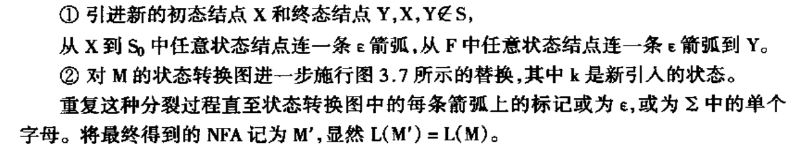
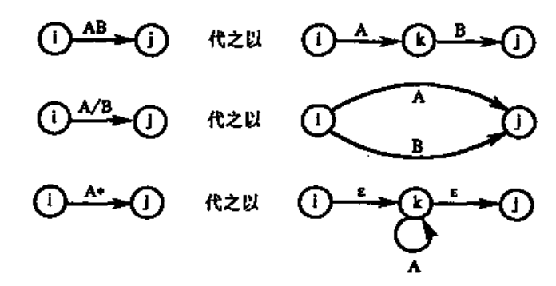
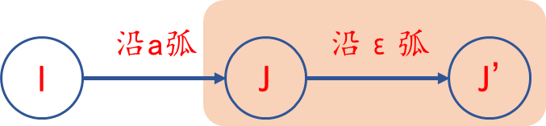
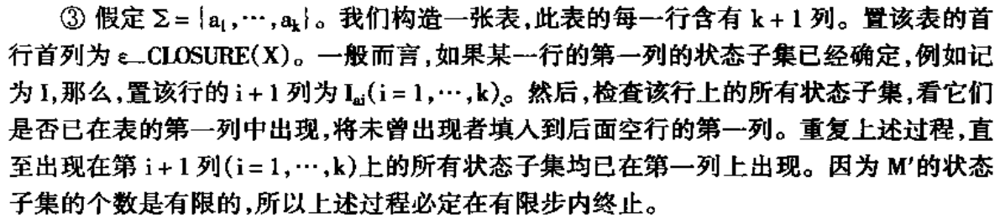
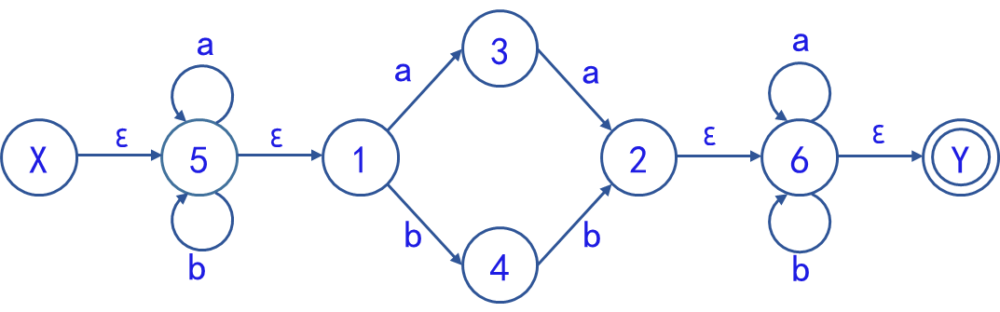
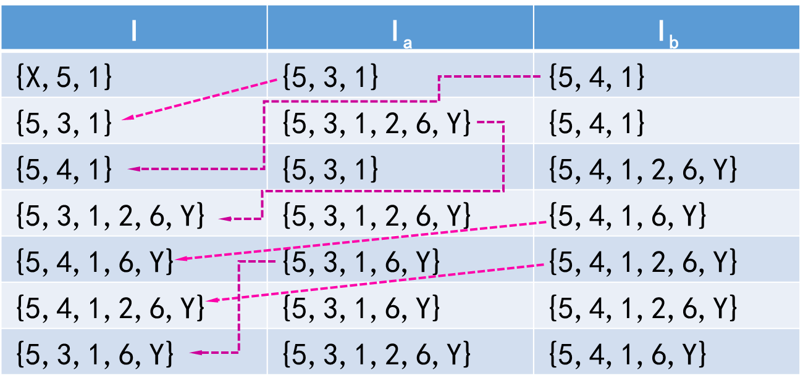
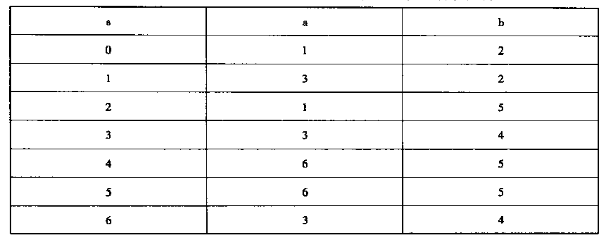
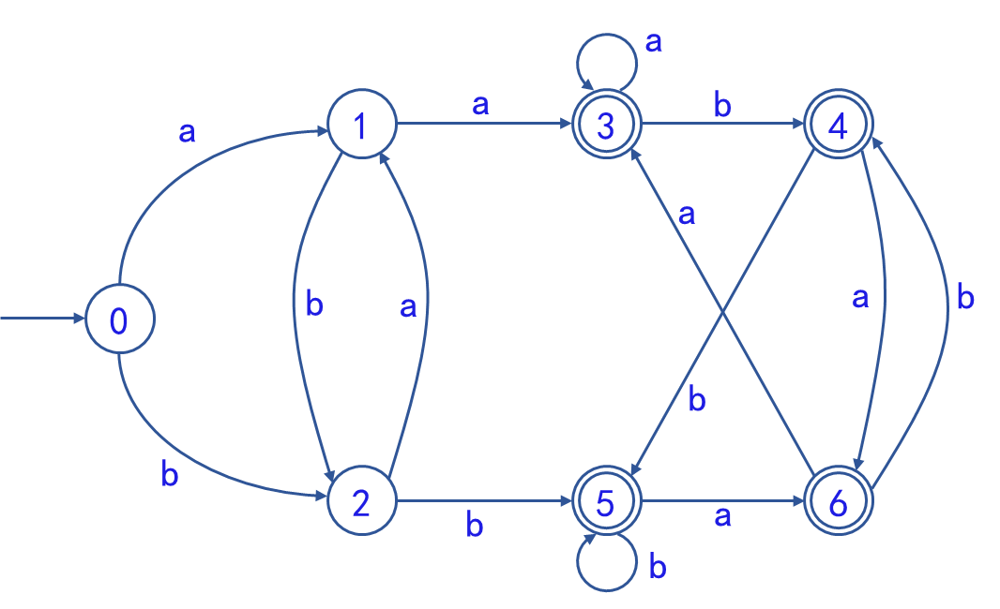

STEP1 改造NFA


STEP2 将改造后的NFA变为DFA
【预备】ε−CLOSURE(I)
假定I是M′的状态集的子集，对于子集中所有点的ε出边
定义I的ε闭包ε−CLOSURE(I)为: (a)若q∈I,则q∈ε−CLOSURE(I);(b)若q∈I,那么从q出发经任意条ε弧而能到达的任何状态q′都属于ε−CLOSURE(I) 【预备】ε−CLOSURE(Ia)
对于子集中所有点的a∈Σ出边
若J是那些可从I中的某一状态结点出发经过一条a弧而到达的状态结点的全体。则Ia=ε−CLOSURE(I)(J) 
⭐填表方法



STEP3 状态重命名

STEP4 画出等价的DFA
